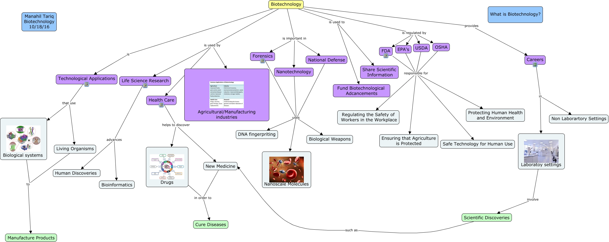

WARNING:
JavaScript is turned OFF. None of the links on this concept map will
work until it is reactivated.
If you need help turning JavaScript On, click here.
This Concept Map, created with IHMC CmapTools, has information related to: biotechcMap3, Health Care helps to discover New Medicine, National Defense uses DNA fingerpriting, Careers in Laboratoy settings, New Medicine in order to Cure Diseases, Biotechnology is regulated by OSHA, Biotechnology is used by Agricultural/Manufacturing industries, Health Care helps to discover Drugs, USDA responsible for Safe Technology for Human Use, USDA responsible for Regulating the Safety of Workers in the Workplace, Biotechnology is Technological Applications, Forensics uses DNA fingerpriting, FDA responsible for Safe Technology for Human Use, Biotechnology is important in Forensics, Biotechnology is regulated by FDA, FDA responsible for Ensuring that Agriculture is Protected, Biotechnology is regulated by EPA's, FDA responsible for Regulating the Safety of Workers in the Workplace, Forensics uses Biological Weapons, EPA's responsible for Ensuring that Agriculture is Protected, Biotechnology is used by Life Science Research
